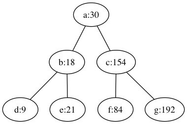

Retrospective November 2019 - January 2020
Goal: Reading as much as possible
Good enough on this one. If I've counted right, I've read 4 books in this time. But I am writing less about them.
Goal: Learning Estonian and Russian
Taking a hiatus on these two. Finished my Estonian A1.1 but didn't enjoy the course format. I dropped out of the Russian one.
Goal: Make the Reading Apéro popular in Estonia
This will take more work but I've done 3 already and there was people each time
Node.js in Action, by Alex Young et al. (5/10)

Like several resources I've found that claim to talk about Node.js, this one talks instead (and at length) about the most used frameworks. It is useful if you are interested in the Node ecosystem, but it starts pretty quickly to feel like reading a catalog or a white paper.
If you want to understand how the event loop works, how to use streams, and when to start using clustering, then you'll need to look elsewhere.
Retrospective September-October 2019
Goal: Getting back in shape with problem-solving
What I wanted to do: Lately, I've reflected on side projects and career growth in general. Often I want to start some side project without having a real problem that I want solved. In the long run, this deprives me of motivation and I end up giving up.
I want to stay open to start one project when I feel I've got something interesting to develop, but I don't want to create yet another implementation of a solved problem (it was a markdown parser last time).
Programming contests offer problems that don't require weeks of work but can be worked on in a single session (30-120 minutes). I'll stick to them for a while.
Outcome: ❌ Haven't solved a single problem. Lesson: if I don't see value in this, I'll never allocate time to do it. Open source still makes more sense.
Goal: Focused courses on PluralSight
What I wanted to do: I'm trying PluralSight because I've seen a very interesting and to-the-point course on Node. My experience with books has been pretty negative recently, so I want to see if it gets better with the course format. I'm going through the very thorough Learn Docker course and if feels like I'm learning valuable things that help me doing my day-to-day job.
Outcome: ✅ I have finished the Node course and gotten a better understanding of Node. I appreciate the instructor's care about the learner's retention and suggesting to go back to the lectures that I feel less confident about. I'll try to do that but I'm pessimist about me actually managing to.
❌ I've somehow abandoned the Docker course for lack of interest but I might get back to it as Docker is a useful tool.
Peopleware: Productive Projects and Teams, by Tom DeMarco and Timothy Lister (4/10)

This central tenet of this book is that software development is not a technological problem but a social one.
It contains several good points, yet it felt like rehashing of wisdom already common among conscentious programmers (whose lot I strongly believe I belong to). It's totally possible that it contributed in large part to that same wisdom but then reading it was like having a conversation with myself trying to convince me of what I'm already convinced of: Leave the programmer as quiet as possible and offer her the choice over the whole spectrum of possibility that ranges from complete isolation to total social immersion.
A novel concept for me and worth a mention is the one according to which the intrinsic motivation of a programmer is curtailed when she's asked to give up the quality of the software she's developing in favor of arbitrary deadlines. The quality seen by the programmer is in general superior to the one required by the customer yet if the standard is dictated by the latter then the former starts feeling demotivated as she's no longer proud of what she's working on.
I'd recommend it if you were new to software shops.
Breaking Asynchronous Loops
Suppose you want to iterate over an array. On each element, you want to call a function that takes some callback, and if the callback executes some test successfully, then don't execute the remaining iterations.
I needed to examine the elements of an array and try to acquire a lock on the first of them not locked yet. It started as something like this:
function myFunction(myArray, callback) { for (const el of myArray) { acquireResource((err, resource) => { if (err) { // Do next iteration. } // Resource acquired! Get out of this loop now! return callback(); }); } }
For the sake of simplicity, we can imagine the acquireResource function to be pretty silly and just always be successful:
function acquireResource(callback) { return callback(null, {a: 1}); }
Would you be surprised if I told you that this loop runs myArray.length times, regardless of us calling the callback sooner or later? Well, I was (apologies). The problem is that the callback is called when the function acquireResource ends, which in Node happens at the end of the for loop when the callbacks are called.
> myFunction([1, 2, 4], () => { ... console.log('called'); ... }); called called called
The solution that I've found is based on recursion. It looks like this:
function recur(anArray, index, callback) { if (index >= anArray.length) { return callback(); } acquireResource((err, resource) => { if (err) { // Repeat for the next element! recur(anArray, index + 1, callback); } return callback(); }); } function myFunction(myArray, callback) { recur(myArray, 0, callback); }
myFunction calls recur with the array and an initial index 0, passing the callback. If the function is called too many times, it means we're used up the array, so we don't need to do anything (the initial check in the recur function). Otherwise, we call recur with the next index. When we're done, we just call the callback, and never go over the other elements in the array. Cool, uh?
> recur([1, 2, 3], 0, () => { ... console.log('I am called'); ... }); I am called
(Things would probably have been simpler if I were allowed to use async/await, but the function acquireResource was callback-based and so there wasn't much I could do about it.)
Have I missed an obvious error? Do you know a better solution? Leave a comment!
Briefly, What's SageMaker?
Today I decided to start a new series of short posts that give a high-level basic understanding of some piece of technology. The first post is about AWS SageMaker!
SageMaker is part of the Machine Learning solutions provided by Amazon. These solutions are provided in stages:
Steps for ML using AWS:
- Pre-built services to solve standard problems -> Application services (Amazon Rekognition, Polly, Comprehend)
- Basic customization (of datasets and algorithms): SageMaker
- Full control (including infrastructure): EC2 and Deep Learning AMI.
To use SageMaker, we only need to write instrumenting code, like tune algorithms and declare where the data is stored.
Forge Your Future with Open Source, by VM (Vicky) Brasseur (6/10)

I've read this book as a self-help one. I wanted to convince myself that I needed to cut a part of my free time in order to contribute to FOSS (Free and Open Source Software). I didn't need much convincing, neither did I need most of the technical knowledge; in any case, the book doesn't go into much technical detail. What it is good for is in framing the value of contributions in order to advance one's own career.
The take-aways for me were:
- How and why to compile a list of goals to follow when selecting a project to contribute to
- A few legal details:
- Does my company allow me to work on FOSS in my own time on their equipment?
- Do I have ideological preferences on which license I demand the project has before a move a finger to contribute to it?
- A few organizational ones:
- Look for projects that make it clear how to contribute and facilitate the process for new joiners
- The onion structure of FOSS projects
The rest of the pages were dull to me. I recommend it as a nice recap of what you need to start contributing. If you know most of the stuff already, you can skip it and get to work instead.
I've Added Nice Footnotes to My Website
Erm, Bigfoot for some reason stopped working... I've found an alternative and I'll try to fix my poor notes when I find time.
I often read jamesclear.com, and I really like the way they do footnotes -- they're actually popups that appear when clicking on a button. I wanted to try something similar for this very website and ended up discovering the amazing bigfoot.js.
Solution: hexo + hexo-footnotes + bigfoot
I was already using hexo-footnotes1, a hexo plugin that simplifies writing footnotes. When I want to write one, I do something like:
Hey, this is a footnote[^1]!
and then somewhere else I write the content:
[^1]: This is what you're going to read following the footnote.
This generates HTML looking like this:
<sup id="fnref:1"><a href="#fn:1" rel="footnote">1</a></sup>
for the origin, and
<div id="footnotes"> <hr> <div id="footnotelist"> <ol style="list-style:none; padding-left: 0;"> <li id="fn:1"> <span style="display: inline-block; vertical-align: top; padding-right: 10px;">1.</span> <span style="display: inline-block; vertical-align: top;"> This is what you're going to read following the footnote. </span> <a href="#fnref:1" rev="footnote"> ↩</a> </li> </ol> </div> <div>
for the destination.
Now we need to install bigfoot. Here's what I've done, step by step:
- Downloaded the bundle from the website2, and copied
bigfoot.min.jsinto my theme's directory (themes/landscape/source/js), together with a minified version of jQuery. - Copied
bigfoot-default.cssintothemes/landscape/source/css - Added
@import "bigfoot.css"at the end of my main style file inside the css directory,style.styl
Now I just need to write the following snippet in the posts where I want to use it:
<script type="text/javascript" src="/js/jquery-3.3.1.min.js"></script> <script type="text/javascript" src="/js/bigfoot.min.js"></script> <script type="text/javascript"> $.bigfoot(); </script>
and use my footnotes exactly the way I did before.
Parting thoughts
You can see examples of the footnotes throughout this post. What I don't really like is that I need to repeat the <script> boilerplate in the files where I want to use bigfoot, and I am sure there's a more elegant and less repetitive way of doing it. Well, I'll leave it for next time for now.
Happy footnoting!
I've also found that the project had out-of-date dependencies, so I created a PR for it. I've got low expectations for it to be merged soon, as the project seems to have been inactive in the last year, and there's no CONTRIBUTING-like file, nor does it seem easy to reach out to the author.↩
I Implemented a Red-Black Tree (part 1)
A Red-Black tree is a binary search tree (BST) that takes some action to try and keep itself balanced. We know that BSTs are great at storing nodes identified by some key for which an order relationship exists (e.g., integers). They have the property that the values in the left sub-tree of each node n have keys smaller-than n's key n.k, and those in the right sub-tree have keys greater-than n.k1.
In a BST, searching for a key takes logarithmic time, if the tree is balanced, that is, if the root's left and right sub-tree have roughly the same height. The problem is that for particular key insertion orders, this might no longer be true: in particular, if you insert the keys in sorted order, you'll find a tree which looks more like a linked list, that makes search linear in the worst case. This is why people have come up with a number of strategies to keep the BST balanced.
Rotations
A RB tree changes the Insert and DeleteNode operations by adding a bunch of invariants, to satisfy which some additional work is needed when changing the number of nodes in the tree. The basic operation is the node rotation: there is a way of rotating the position of 2 nodes while keeping the BST relationship valid. Here's a replica of an image from CLRS2 to illustrate the procedure: we want to change this

into this:

Suppose that the BST properties are valid for the first graph. It is easy to see that they keep holding for the second:
- The subtree
ahad keys smaller thanxand is stillx's left sub-tree after the rotation - The subtree
bhad keys larger thanx, and is stillx's right sub-tree after the rotation; it was also iny's sub-tree, and still is after the rotation cremainsy's right sub-tree
The tree class starts like:
class RBTree { // ... public: RBTree* root; // Each node keeps a pointer to the tree's root. int key; Color color; // We'll talk about this later :) RBTree* p; // The node's parent. RBTree* left; RBTree* right; // ...
The code for the rotate-right operation looks like this:
// static void RBTree::RightRotate(RBTree** root, RBTree* y) { assert(y); RBTree* x = y->left; // We're not in the configuration described in Figure 1, so we just stop. if (!x) { return; } y->left = x->right; if (x->right) { x->right->p = y; } x->p = y->p; x->right = y; if (!y->p) { // y is the root: assert(root && *root); *root = x; } else if (y->p->left == y) { // y is a left child: make x its new left child. y->p->left = x; } else { // y is a right child: make x its new right child. y->p->right = x; } // x is the new parent of y: y->p = x; }
Test RightRotate
The code above makes just some pointer manipulation to ensure we get in the right layout, as shown in Figure 2. Since we don't have an Insert function yet, we test this by first creating an RBTree object and wiring up the nodes manually. We can build a test fixture in doctest like this:
class ManualTreeCtor { public: // A full tree of height 3 (7 nodes). RBTree* a; // root ManualTreeCtor() : a(new RBTree(30)) { auto* b(new RBTree(18)); a->left = b; b->p = a; b->root = a; auto* c(new RBTree(154)); a->right = c; c->p = a; c->root = a; auto* d(new RBTree(9)); d->p = b; b->left = d; d->root = a; auto* e(new RBTree(21)); e->p = b; b->right = e; e->root = a; auto* f(new RBTree(84)); f->p = c; c->left = f; f->root = a; auto* g(new RBTree(192)); g->p = c; c->right = g; g->root = a; } };
which just implements a tree like this:

We now test the cases for y being the root or not:
TEST_CASE_FIXTURE(ManualTreeCtor, "right-rotate non-root") { RBTree::RightRotate(&a, a->left); CHECK(a->key == 30); REQUIRE(a->left); CHECK(a->left->key == 9); REQUIRE(a->left->right); CHECK(a->left->right->key == 18); REQUIRE(a->left->right->right); CHECK(a->left->right->right->key == 21); } TEST_CASE_FIXTURE(ManualTreeCtor, "right-rotate root without using insert") { RBTree::RightRotate(&a, a); CHECK(a->key == 18); REQUIRE(a->left); CHECK(a->left->key == 9); REQUIRE(a->right); CHECK(a->right->key == 30); REQUIRE(a->right->left); CHECK(a->right->left->key == 21); REQUIRE(a->right->right); CHECK(a->right->right->key == 154); }
While I won't show the code for the left-rotation, the logic is exactly the same (but for going from the configuration of Fig. 2 to the one in Fig. 1).
With these operations in place, we can now implement the insertion operation.
Insertion, and the node's color
RB trees' nodes have an additional attribute: a color which can be either RED or BLACK. It is common to assign some NIL value to all leaves (I implemented it via a nullptr, without an explicit node with that color3). The invariants I mentioned above can be expressed via five properties^3 :
- Each node is either red or black.
- The root is black.
- All leaves (NIL) are black[^3].
- If a node is red, then both its children are black.
- Every path from a given node to any of its descendant NIL nodes contains the same number of black nodes.
These invariants can be kept when inserting. We need to reason about the sibling of the node-to-be-inserted's parent, which we can refer to as the node's uncle. After each insertion, we run an operation InsertFixup to restore the invariants that might have been violated. This is an implementation:
// static void RBTree::Insert(RBTree** root, RBTree* z) { assert(z); assert(root && *root); RBTree* y = nullptr; RBTree* x = *root; while (x) { y = x; if (z->key < x->key) { x = x->left; } else { x = x->right; } } z->p = y; if (!y) { *root = z; } else if (z->key < y->key) { y->left = z; } else { y->right = z; } z->left = nullptr; z->right = nullptr; z->color = Color::RED; InsertFixup(root, z); }
The InsertFixup method for node z is a bit messy because there are many checks for null pointers, but the two branches of the if statement do very symmetric operations (inverting left and right), and the branch selected depends on z's parent being a left or right child.
// static void RBTree::InsertFixup(RBTree** root, RBTree* z) { assert(z); assert(root && *root); while (z && z->p && z->p->color == Color::RED) { if (!z->p->p) { break; } if (z->p == z->p->p->left) { // z's parent is a left child. Its uncle is z's parent right child. auto* y = z->p->p->right; if (y && y->color == Color::RED) { // Case 1: z's uncle is red. z->p->color = Color::BLACK; y->color = Color::BLACK; z->p->p->color = Color::RED; z = z->p->p; } else if (z == z->p->right) { // Case 2: z's uncle is black and z is a right child. z = z->p; RBTree::LeftRotate(root, z); } // Case 3: z's uncle is black and z is a left child. if (z && z->p) { z->p->color = Color::BLACK; if (z->p->p) { z->p->p->color = Color::RED; RBTree::RightRotate(root, z->p->p); } } } else { if (z->p == z->p->p->right) { auto* y = z->p->p->left; if (y && y->color == Color::RED) { z->p->color = Color::BLACK; y->color = Color::BLACK; z->p->p->color = Color::RED; z = z->p->p; } else if (z == z->p->left) { z = z->p; RBTree::RightRotate(root, z); } if (z && z->p) { z->p->color = Color::BLACK; if (z->p->p) { z->p->p->color = Color::RED; RBTree::LeftRotate(root, z->p->p); } } } } } (*root)->color = Color::BLACK; }
Conclusion
I've said a few words about Red-Black trees, a kind of binary search trees that have the property of remaining balanced when inserting and deleting nodes. In this post, I've shown the basic rotate operation and shown an implementation of Insert. In the next episodes, I'll implement a DeleteNode operation, and then benchmark the tree against a classic binary search tree to see how much my implementation keeps its promises.
I am somehow simplifying by not counting the keys equal to
n.k. However, that is a small issue for which I've tried a couple of easy solutions, like either relaxing the constraint on either sub-tree (e.g., smaller-than-or-equal rather than smaller-than for the left sub-tree), or using a counter in each node for repeated keys. It's the typical tiny implementation detail algorithm courses tend to skip over.↩I haven't found this decision to limit the implementation of
Insert, but I might revisit it when I'll finally understand what it's for. In particular, I plan to use a single node with no value and only the color black, which all other leaves will point to.↩
Implement std::multiset
In this post, I talk about the std::multiset and about some design decisions I needed when trying to implement it. The full implementation is on GitHub.
Multisets and multimaps
There are a few data structures in the standard library that I never use. In some cases, it's because I never had the right use case no my hands, in others (embarrassingly enough) because I am too lazy to read up about one that I'm not already familiar with. But lately I've found myself needing something to solve a problem, and I discovered that I could get some great help by just using a data structure I'd never heard of: the std::multiset (or its cousin, the std::multimap).
I had read about it before. On the surface, it is just like a std::set, but it let you store the keys multiple times. Why on Earth would you need that, and in particular, which cases are not served as well by just the std::set?
There's something interesting, however, about this structure: It keeps its keys sorted. Consider the following situation: You want to store the nodes of a binary tree by level (root being at level 1, leaves at level O(log(N)) + 1 if we have N nodes and a balanced tree). Then you want to print the sum of the values of the nodes at each level, sorted by (ascending) level.
You could scan the tree and use a map level-to-nodes to accomplish this. However, you know that a std::map would not keep the order of the keys.
A better way to do it is by using a multimap! You'd do something like:
typedef int level_t; struct node { int value; node* left; node* right; }; void printLevelSums(const int num_levels) { std::multimap<level_t, node> m; // Store each node using the level as a key. Note that we have multiple // keys with the same value. // ... for (int i = 1; i < num_levels; ++i) { auto range = m.equal_range(i) int sum = 0; for (auto it = range.first; it != range.second; ++it) { sum += it->value; } std::cout << sum << std::endl; } }
Implementing a multiset
The requirements on the basic operations of a multiset, expressed in terms of time complexity, are the following:
// O(log(size)): void insert(const Key& t); bool contains(const Key& t) const; iterator find(const Key& t); // Returns the number of elements with key `key`. // O(log(size of the container)) plus linear in the number of the elements // found. unsigned count(const Key& key) const; // Removes all elements with the key equivalent to key. Return number of // elements erased. O(log(c.size()) + c.count(k)). unsigned erase(const Key& key);
We see that the insertion and search are not constant like they would if using a hash, but logarithmic. The count operation reveals how many elements having the same key are in the multiset.
One way of implementing this is by using a binary search tree, where each node contains a vector<Key>. We would then have something like:
template <typename Key> class multiset { typedef node<Key> BinarySearchTree; BinarySearchTree backend_; // ... };
Back-end: the node
The strategy I used was to just implement a BST with the right data and then forwarding the operations to the node. You all know what a node/BST looks like, so I'll just write a few words about bizarre operations I implemented. Here's the complete interface of the node/BST structure (I decided to use the node as a recursive definition of a BST):
// A node is a tree. template <typename Key> struct node { private: vector<Key>* data_; // never null if the object exists. // TODO: // use optional<vector<Key>> void getsize(unsigned& cnt) const; void vectorize(vector<Key*>& v) const; std::pair<node<Key>*, is_left_child_t> findParent(const node<Key>* n); public: node<Key>* left_; node<Key>* right_; node() : data_(new vector<Key>), left_(nullptr), right_(nullptr) {} node(const Key& k) : data_(new vector<Key>), left_(nullptr), right_(nullptr) { data_->push_back(k); } ~node(); Key value() const; void insert(const Key& k); node<Key>* find(const Key& k) const; bool contains(const Key& k) const; void print() const; unsigned count(const Key& k) const; unsigned size() const; unsigned nodesize() const; node<Key>* findSuccessor() const; unsigned erase(const Key& k); vector<Key*> vectorize() const; };
vectorize: this method transforms the multiset into a vector of the keys, without repeating them. It is useful for the implementation of theiterator. I'll talk about the iterators in a separate section.nodesize: The number of items associated with a singleKey.sizejust returns the number of stored keys.findParent: I don't store the node's parent in my implementation. It would have simplified things, but it's a trade-off between space and complexity, or space and time (I need to find the parent when I need it, which takesO(log(N))time, so I can spare a pointer in each node, that would allow me to find the parent inO(1)if I know the address of the node in question. Oh well.)
Iterators
The iterator on a multiset should offer what you usually expect from such a class: a begin() and an end() method, plus some pre- and post-increment or another equivalent of a next() method to go to the next node. To do it, I've used a vector of Key pointers and an index into it. When I build an iterator from a node, I can process the sub-tree starting at that node. Since the multiset contains only Key values, my iterator needs to hide the fact that I'm using a tree in the back-end, which is why the de-referencing operator returns a Key itself, and not a node.
class iterator { vector<Key*> to_process_; int cur_; public: iterator(node<Key>* n) : cur_(n ? 0 : -1) { if (n) { to_process_ = n->vectorize(); } } // pre-increment: iterator& operator++() { if (cur_ == -1) { return *this; } ++cur_; if (cur_ == to_process_.size()) { cur_ = -1; } return *this; } Key& operator*() { if (cur_ == -1 || cur_ == to_process_.size()) { throw OutOfRange(); } return *to_process_[cur_]; } bool operator==(const iterator& it) const { if (cur_ == -1 && it.cur_ == -1) { return true; } else if (it.cur_ == -1) { return false; } else if (cur_ >= to_process_.size() || cur_ == -1) { return false; } if (to_process_[cur_] && it.to_process_[cur_]) { return *(to_process_[cur_]) == *(it.to_process_[cur_]); } return false; } bool operator!=(const iterator& it) const { return !operator==(it); } };
Conclusions
A few considerations:
Needless to say, there's a lot of room for improvement. It took me a few days to implement this basic version, and I realize now that it might not necessarily do what I wanted to do (for instance, the iterator doesn't allow you to iterate over all the keys, like the std::multiset does, but only on the non-repeating ones).
Once more, I see that implementing on paper to have a full vision of what you're going to do is of paramount importance: The farther down the way to the full implementation you spot errors, the longer the corrections take, and the more they can impact other areas which you have lost track of in the meanwhile. With more experience, you can usually keep a bigger plan in your head.